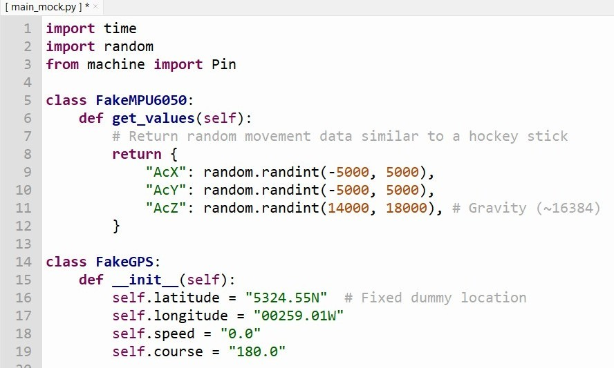
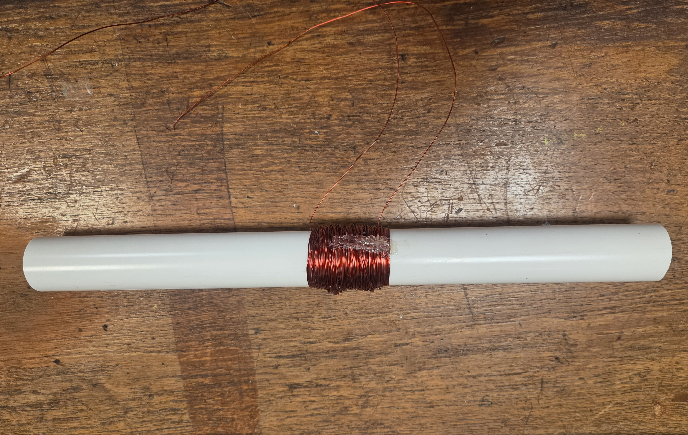
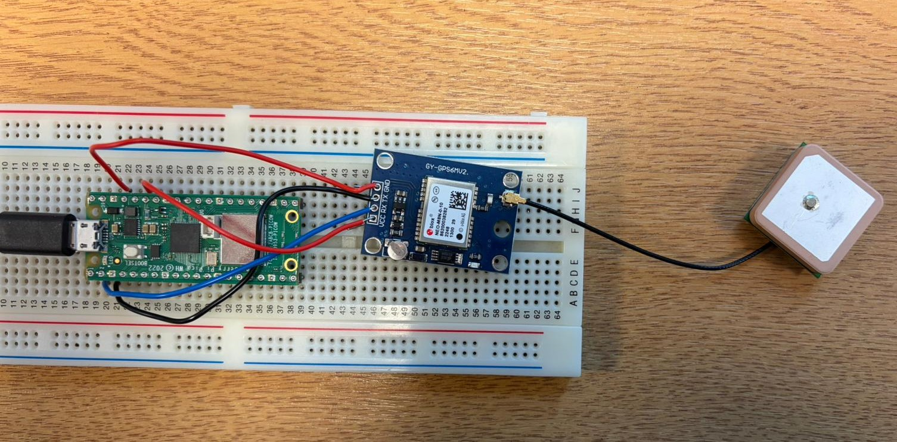

The software phase commenced with the initialization of the Raspberry Pi Pico W. An initial connection error in the Thonny IDE was resolved by installing the MicroPython operating system. To validate the data logging architecture before hardware completion, a simulation was conducted using "fake" sensor drivers designed to mimic hockey stick kinetics, such as generating random acceleration values and fixed dummy locations. This test successfully generated a synchronized CSV file containing mock timestamps, geospatial coordinates, and speed data.
Week 1
Our primary objective for the inaugural week was to verify the inventory of delivered components and establish the baseline functionality of our core hardware and software modules. We aimed to validate the Raspberry Pi Pico WH’s operating environment, confirm the feasibility of the kinetic energy harvester through electromagnetic induction, and establish basic communication protocols for the GPS module. The project was divided into two main sections: hardware and software. The hardware section was further divided into two more sections: power generation and gps & accelerometer.
Software
The software development during this phase focused on initializing the microcontroller environment and establishing a robust logic framework for data acquisition through simulation.

Hardware
The hardware focus centered on the physical construction of our power generation apparatus and the initial wiring of our tracking sensors to ensure baseline communication.

For the hardware section, we began by setting up the power generation module. This involved using the concept of Faraday torch(shake flashlight) to generate power through motion. A copper coil was wrapped around a PVC pipe and a magnet was attached to the inside of the pipe. When the pipe is shaken, the magnet moves within the coil, generating electricity. However, due to the absence of the magnets, the power generation module was not fully functional.

Initial hardware testing focused on establishing UART communication between the NEO-M8 GPS module and the Pico. The module to the Pico's 3.3V rail and GND, connecting GPS TX to GP5 and GPS RX to GP4. While we did not receive data indoors at first, repositioning the antenna near a window enabled the reception of raw NMEA sentences, marking a major milestone in communication.